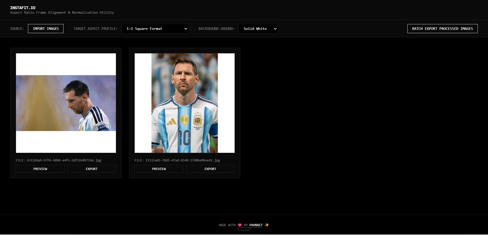
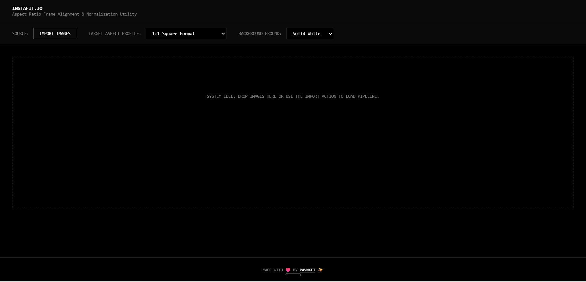

Why I Built This
Every social platform has its own aspect ratio obsession. Instagram wants 1:1 squares or 4:5 portraits. YouTube thumbnails demand 16:9. LinkedIn banners need a completely different ratio. If you manage multiple accounts or batch-post content, you spend half your time manually cropping and resizing images in editors that upload your files to remote servers.
I wanted a tool that normalizes any image to any standard aspect ratio in the browser, zero uploads, zero accounts, zero watermarks. Something I could drop 50 photos into and get properly framed exports in seconds. Since nothing lightweight existed that did exactly this, I built it myself.
What It Does
InstaFit.io is an ultra-minimalist, high-contrast client-side utility engine designed to normalize image aspect ratios and frame alignments for modern digital layouts. You import images via file picker or drag and drop, pick a target aspect ratio profile, choose a background fill color, and the tool automatically pads or centers your image to fit the target frame. Every image gets its own preview and export button, plus a batch export option to download everything at once.
The tool is completely dependency-free. A single index.html file — no frameworks, no build tools, no server runtime. Open it in any browser and it works.

How It Works
The engine runs entirely in the browser using the Canvas API. When you drop images in, each one is drawn onto an offscreen canvas sized to the target aspect ratio. The image is centered within the canvas, and the remaining space is filled with your chosen background color — either solid white or a dynamically blurred version of the image itself. The result is exported as a new image file without any server round-trip.
The export pipeline renders at a reference dimension of at least 1440px on the longest side, ensuring high-resolution output. Files are automatically named with zero-padded timestamps (IMG_YYYYMMDD_HHMMSS_normalized.png) so there are no naming collisions in batch exports.
No data leaves your machine. The entire pipeline — import, process, export — happens in browser memory.
Features
- Multiple aspect ratio profiles — 1:1 Square, 4:5 Vertical, 16:9 Widescreen, 9:16 Vertical Story, 4:3 Legacy Standard.
- Background modes — Solid White padding or Dynamic Blur (stretched, blurred version of the source image).
- Drag and drop import — Drop multiple images at once into the pipeline.
- Per-image preview and export — Review each result before downloading.
- Batch export — Download all processed images as individual files in one click.
- Zero uploads — Everything runs locally in your browser. No server, no accounts, no dependencies.
- Timestamp-based naming — Auto-generated filenames (IMG_YYYYMMDD_HHMMSS_normalized.png) prevent collisions.
- Terminal-inspired UI — Dark, monospaced, high-contrast interface focused on speed.

Tech Stack
| Layer | Technology | Purpose |
|---|---|---|
| Frontend | HTML5, CSS3, Vanilla JavaScript, Canvas API | Powers the UI and handles all image processing client-side. |
| Image Engine | Canvas API | Draws, pads, and exports images at target aspect ratios without server calls. Reference output dimension of 1440px+. |
| Deployment | Single HTML file | No build step, no backend, no dependencies. Just open index.html in a browser. |
Try It Yourself
The project is open source and available for everyone to use, modify, or host independently.
- Launch InstaFit.io: Open the Live Tool
- Source Code: View the GitHub Repository